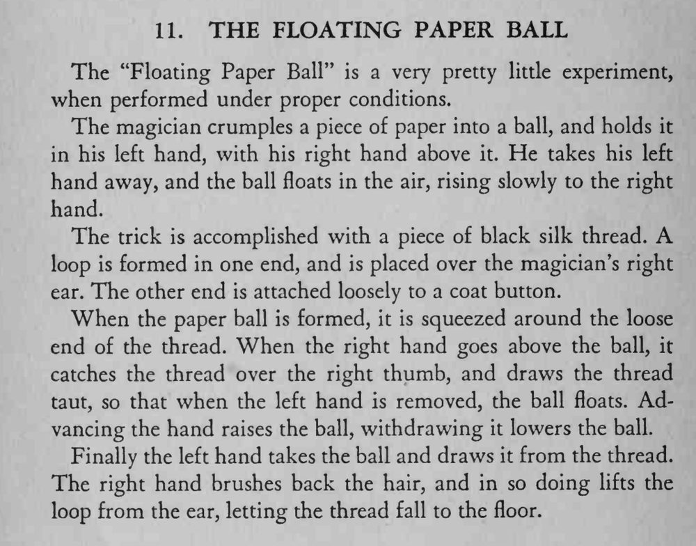

纸球从左手缓缓浮起，升向右手，右手移动时球也跟着升沉，最后被取下来。
背景要偏暗，用细黑线，别让光线从身后直打到线上。

The "Floating Paper Ball" is a very pretty little experiment, when performed under proper conditions. The magician crumples a piece of paper into a ball, and holds it in his left hand, with his right hand above it. He takes his left hand away, and the ball floats in the air, rising slowly to the right hand. The trick is accomplished with a piece of black silk thread. A loop is formed in one end, and is placed over the magician's right ear. The other end is attached loosely to a coat button. When the paper ball is formed, it is squeezed around the loose end of the thread. When the right hand goes above the ball, it catches the thread over the right thumb, and draws the thread taut, so that when the left hand is removed, the ball floats. Advancing the hand raises the ball, withdrawing it lowers the ball. Finally the left hand takes the ball and draws it from the thread. The right hand brushes back the hair, and in so doing lifts the loop from the ear, letting the thread fall to the floor.